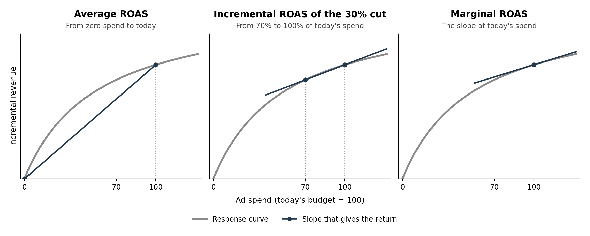
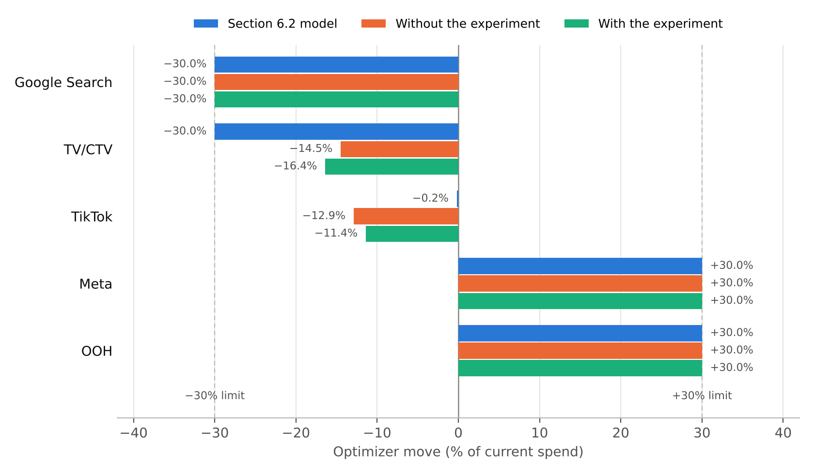

6.4 Calibrer le MMM à l’aide d’expériences
À propos de la version française
Cette page est une traduction par IA de la version anglaise de Marketing Science in Python. La version anglaise fait foi et prévaut en cas de divergence. Le code, les notebooks et le texte intégré aux images restent en anglais. Lire la version anglaise
Nous avons maintenant deux résultats pour Google Search. Le MMM de la section 6.2 couvre les cinq canaux, mais son estimation pour Search est très incertaine. L’expérience de la section 6.3 mesure Search avec précision, sur ce seul canal.
La prochaine décision exige les deux. Réduire Search libère du budget. Pour décider où le réinvestir, il faut comparer les cinq canaux, ce que seul le MMM permet ici. Nous allons donc intégrer au MMM ce que l’expérience nous a appris sur Search.
En quoi consiste la calibration ?
La calibration consiste à améliorer un MMM à l’aide de résultats expérimentaux. Dans un MMM bayésien, elle passe par la loi a priori. L’estimation expérimentale d’un canal sert à définir sa loi a priori, puis on réajuste le modèle (Figure 1). Le modèle combine alors les deux sources : il s’appuie surtout sur l’expérience pour le canal testé et sur l’historique pour le reste.

Notre exemple montre l’intérêt de la démarche. Avant le test, le notebook a demandé au modèle de la section 6.2 de prédire l’iROAS d’une réduction de 30 % du budget Search sur huit semaines. Le modèle a prédit 2,95, avec un intervalle à 90 % allant de 0,34 à 8,48. L’expérience a mesuré 1,50.
L’estimation du modèle était environ deux fois plus élevée que la valeur mesurée. Son intervalle était trop large pour prendre une décision. Les dépenses Search avaient à peine varié en trois ans. Au-delà de sa loi a priori, le modèle avait donc peu d’information sur ce canal. La calibration lui apporte cette information.
La calibration se déroule en trois étapes :
- Repérer dans le modèle la grandeur mesurée par l’expérience.
- Convertir le résultat expérimental en loi a priori pour cette grandeur.
- Réajuster le modèle et le comparer au modèle non calibré.
Notebook associé : sec6.2_6.4_mmm_meridian.ipynb est le même qu’à la section 6.2. Les étapes 14 à 18 traitent de la calibration.
Voir sur GitHub
Étape 1 : ROAS moyen, incrémental et marginal
Dans Meridian, chaque loi a priori porte sur une grandeur précise : le ROAS moyen ou le ROAS marginal d’un canal. Le résultat expérimental doit informer la grandeur effectivement mesurée. Commençons donc par distinguer trois types de ROAS.
Supposons qu’un marché dépense $100 par semaine en Search. Les trois ROAS divisent une variation de chiffre d’affaires par une variation de dépense. Ils diffèrent par la plage de dépenses considérée (Figure 2).
- Le ROAS moyen va de $0 à $100 : toute la dépense actuelle. Le MMM le calcule.
- Le ROAS incrémental de la baisse de 30 % va de $70 à $100 : la tranche supprimée par le test. C’est ce que l’expérience a mesuré.
- Le ROAS marginal va de $100 à $101 : le prochain dollar. Le MMM le calcule et l’optimiseur s’en sert pour répartir le budget.

Sur une courbe qui sature, les premiers dollars rapportent plus que les derniers. Le ROAS moyen est donc le plus élevé des trois. L’iROAS de la baisse et le ROAS marginal décrivent tous deux la partie haute de la courbe. Ils sont proches l’un de l’autre et inférieurs à la moyenne.
Le test a mesuré l’iROAS d’une baisse de 30 %. Cette grandeur est la plus proche du ROAS marginal. Le résultat doit donc informer la loi a priori du ROAS marginal.
Que se passe-t-il si l’on choisit mal ? La loi a priori par défaut de Meridian, roi_m, porte sur le ROAS moyen. Si on y place le résultat du test, le modèle assimile le rendement des derniers 30 % des dépenses au rendement de toutes les dépenses. Le notebook ajuste cette version pour comparaison. Il estime le ROAS moyen de Search à 1,96 alors que la valeur réelle dans les données est 3,30, soit environ 40 % de moins. Le ROAS moyen convient seulement si l’expérience coupe entièrement le canal.
Étape 2 : transformer le résultat en loi a priori
Meridian applique la loi a priori au ROAS marginal avec media_prior_type="mroi". L’iROAS expérimental s’en approche sans lui être identique. Le test porte sur une baisse de 30 %, dans huit marchés, pendant huit semaines. Le ROAS marginal décrit le prochain dollar à l’échelle nationale, y compris les ventes qui arrivent plus tard. Chaque écart appelle un ajustement (Table 1).
| Ajustement | Ce qu’il corrige | Effet sur la loi a priori de Search |
|---|---|---|
| Durée | Chiffre d’affaires perdu après les huit semaines | Centre de 1,50 à 1,71, erreur standard de 0,257 à 0,29 |
| Échelle des dépenses | Les marchés testés représentent environ un cinquième des dépenses nationales Search | Erreur standard de 0,29 à 0,64 |
| Incertitude de conversion | Une baisse de 30 % sert à estimer le prochain dollar | Erreur standard de 0,64 à 0,69 |
Durée. Elle relève le centre de la loi a priori. Une baisse en semaine huit réduit encore les ventes en semaines neuf et dix, après la fin de la mesure. Avec une demi-vie d’une semaine pour Search, environ 12 % de l’effet se produit hors de la fenêtre. Pour un canal plus lent comme TV/CTV, une fenêtre de huit semaines manquerait environ la moitié de l’effet.
Échelle des dépenses et incertitude de conversion. Elles élargissent la loi a priori. Le test couvre environ un cinquième des dépenses nationales de Search. Son résultat est donc moins certain à l’échelle du canal entier. La conversion ajoute une marge d’incertitude minimale de 15 % du centre, car une baisse de 30 % ne donne qu’une approximation du prochain dollar.
Après les trois ajustements, le résultat expérimental de 1,50 (erreur standard de 0,257) donne une loi a priori du ROAS marginal de Search de moyenne 1,71 et d’écart-type 0,69. Cette loi est volontairement plus large que la distribution issue de l’expérience. Celle-ci renseigne précisément sur huit marchés, et moins précisément sur le ROAS marginal national. C’est ce dernier que décrit la loi a priori.
Les ajustements de durée et d’échelle suivent la documentation Meridian sur la construction d’une loi a priori à partir d’une expérience. Ce livre ajoute l’incertitude de conversion : la méthode de Meridian suppose une comparaison à des dépenses nulles, alors que notre baisse est partielle.
# Imports as in Section 6.2. Both helpers are defined in notebook Step 15.
center, se = calibrated_prior_moments(
estimate=1.500, standard_error=0.257,
capture_proportion=0.8756, # duration: share of the effect inside 8 weeks
# taus: duration, spend scale, recency (zero, because the test is recent)
taus=[0.142, 3.606, 0.000],
translation_share=0.15, # translation uncertainty
) # -> center 1.71, SE 0.69
search_mu, search_sigma = lognormal_from_mean_std(center, se)
# mroi_mu, mroi_sigma: one entry per channel. Search gets search_mu and
# search_sigma; the other four keep a weak prior (notebook Step 15).
calibrated_prior = prior_distribution.PriorDistribution(
mroi_m=tfp.distributions.LogNormal(
loc=tf.constant(mroi_mu, dtype=tf.float32),
scale=tf.constant(mroi_sigma, dtype=tf.float32),
name=constants.MROI_M,
),
# adstock and saturation priors from Section 6.2
alpha_m=prior.alpha_m, ec_m=prior.ec_m,
)
# Same lag and holdout weeks as Section 6.2, so the only change is the prior.
calibrated_spec = spec.ModelSpec(
prior=calibrated_prior, media_prior_type="mroi", max_lag=12,
adstock_decay_spec="geometric", holdout_id=holdout_id,
)Les quatre autres canaux gardent leurs lois a priori peu informatives. On réajuste ensuite le modèle avec les mêmes données et les mêmes réglages.
Étape 3 : le modèle avant et après calibration
Pour isoler l’effet de l’expérience, comparons deux modèles qui ne diffèrent que par la loi a priori de Search. Les deux utilisent des lois a priori sur le ROAS marginal. Le premier emploie des lois peu informatives pour tous les canaux. Le second s’appuie sur l’expérience pour Search (Table 2). Le modèle de la section 6.2 utilisait des lois a priori sur le ROAS moyen. Le prendre comme référence confondrait deux changements.
| Google Search | Sans l’expérience | Avec l’expérience | Valeur réelle |
|---|---|---|---|
| ROAS marginal | 1.95 [0.18, 7.03] | 2.00 [0.93, 3.63] | 1.57 |
| iROAS de la baisse de 30 % | 1.75 [0.16, 6.29] | 1.82 [0.84, 3.32] | 1.50 |
| ROAS moyen | 2.63 [0.22, 9.58] | 2.82 [1.14, 5.26] | 3.30 |
L’estimation a à peine changé. Le ROAS marginal passe de 1,95 à 2,00. L’incertitude, elle, a nettement diminué : l’intervalle à 90 % passe de [0,18 ; 7,03] à [0,93 ; 3,63], soit moins de la moitié de sa largeur initiale.
C’est ce qui rend le modèle exploitable pour Search. À la section 6.2, l’intervalle était trop large et la recommandation avait été mise en attente. L’intervalle calibré satisfait au critère.
Les deux ajustements recommandent la même baisse de 30 % pour Search, le maximum autorisé (Figure 3). La calibration a préservé le sens de la recommandation et donné au modèle la précision nécessaire pour l’étayer.

Pour les autres canaux, le modèle calibré recommande une hausse de 30 % pour OOH et Meta, une baisse de 16,4 % pour TV/CTV et de 11,4 % pour TikTok. À la section 6.2, les baisses de TV/CTV et TikTok étaient de 30,0 % et 0,2 %. Figure 3 permet de voir d’où vient l’écart. Il apparaît dès l’ajustement sans expérience, donc il vient du passage aux lois a priori sur le ROAS marginal.
Appliquer le plan calibré
Le plan calibré contient deux types de recommandations qui s’appliquent différemment.
La baisse de Search a été testée et peut être déployée. Étendez-la par étapes à davantage de marchés. Gardez un groupe de marchés tirés au sort à l’ancien budget comme témoin, et vérifiez que l’iROAS reste inférieur à 2,50.
Le modèle recommande de réinvestir le budget libéré par la baisse de Search en augmentant de 30 % les dépenses d’OOH et de Meta. Augmentez l’un de ces deux canaux de 30 % dans une expérience randomisée par paires de marchés. Notez la prévision d’iROAS du modèle avant le lancement et recalibrez-le avec le résultat. En général, testez un canal lorsque sa dépense est élevée, que l’intervalle est large et que le résultat pourrait changer le plan.
Le tableau de bord de la plateforme répond à une question plus étroite. Le tableau de bord Search rapporte un ROAS fondé sur l’attribution. Il compte toute commande qui suit un clic sur une annonce Search, y compris les commandes qui auraient eu lieu sans l’annonce. Son chiffre est donc généralement supérieur à l’iROAS expérimental. Utilisez-le pour comparer les mots-clés et les créations dans Search. Appuyez-vous sur l’expérience et le MMM pour fixer le budget Search.
C’est la démarche de toute la partie 6. Le MMM propose un budget pour l’ensemble des canaux. Une expérience vérifie la recommandation à la fois incertaine et coûteuse. La calibration réintègre le résultat au modèle, puis le cycle reprend avec le test suivant.
Points clés à retenir
- La calibration utilise le résultat d’une expérience comme loi a priori dans le MMM. Le modèle s’appuie ainsi sur l’expérience pour le canal testé et sur l’historique pour les autres.
- Appliquez le résultat à la grandeur mesurée par l’expérience. Une baisse partielle se rapproche du ROAS marginal. En utilisant le ROAS moyen, on a obtenu ici une estimation trop basse d’environ 40 %.
- Choisissez une loi a priori plus large que la distribution issue de l’expérience pour tenir compte des semaines suivantes, des marchés non testés et de l’écart entre une baisse partielle et le prochain dollar. La calibration a bien davantage resserré l’intervalle de Search qu’elle n’a déplacé l’estimation.